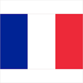

 Французька кухня
Про Францію
Францeзька Респу?бліка (фр. Republique francaise, [?epyblik f???s??z] ( прослухати)) — держава, територія якої складається з метрополії у Західній Європі та низки заморських володінь. Територія метрополії простягається з півдня на північ від Середземного моря до Ла-Маншу та Північного моря, а із заходу на схід — від Рейну до Атлантичного океану. Межує на північному сході з Бельгією, Люксембургом і Німеччиною, південному заході з Іспанією та Андоррою, на сході з Швейцарією, на південному сході з Італією та Монако.